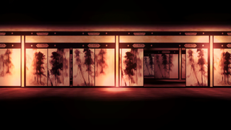

- Welcome to Touhou Wiki!
- Please register to edit. For assistance, check in with our Discord server or IRC channel.
Eientei
Eientei e̞ːẽ̞nte̞ː | |
|---|---|
|
 A hallway in Eientei in Antinomy of Common Flowers
| |
| Location |
Deep within the Bamboo Forest of the Lost |
| Residents | |
Appearances | |
| Official Games | |
| |
| Print Works | |
| |
Eientei (永遠亭 lit. "House of Eternity") is the name of a large, old-fashioned Japanese mansion hidden deep within the Bamboo Forest of the Lost. It has hallways that lead out into the far reaches of the sky. It was created by Eirin Yagokoro for Kaguya Houraisan.[1]
General Information[edit]
Eientei is currently occupied by a large group. Kaguya Houraisan and Eirin Yagokoro have been hiding there since their exile from the Moon. Other occupants include rabbits, lots of them, all under the command of Tewi Inaba and Reisen Udongein Inaba, who protect Kaguya and Eirin from intruders.
It is unknown to the majority of Gensokyo that the residents of Eientei are from the moon.[2] Eientei's residents[3] and the few nonresidents who do know are keeping it a secret.[4] Youkai are apparently aware that Reisen is from the Moon (who proclaims it)[5], but the humans from the Human Village may not be.[6] The average human and youkai know Kaguya as the princess of Eientei and its mistress.
Every month on the night of the full moon, the residents of Eientei hold a Moon Festival (例月祭 Reigetsusai), offering mochi with medicinal herbs pounded into them. Making mochi is thus the main occupation of the Earth rabbits. Eientei has also hosted a lunar expo at least twice, showcasing objects from the Moon. Items include the American flag placed on the moon (confiscated from the Three Fairies of Light),[7] moon rocks, an ox cart used to be able to fly long ago (but now is pulled by an actual ox), a kimono that shines, a lunar rover, and many other relics.[8]
Both humans and youkai may come to Eientei for Eirin's medical services. Fujiwara no Mokou often provides escort through the Bamboo Forest of the Lost. In Alternative Facts in Eastern Utopia, Eientei group's service providing medicines is called "Hourai Pharmacy".
Eientei's Appearances[edit]
Windows[edit]
- Imperishable Night
Eientei is where the incident of Imperishable Night is coming from. It is the stage location for stage 5, 6A and 6B. After the heroines fly through the Bamboo Forest of the Lost fighting either Reimu Hakurei or Marisa Kirisame, they find Eientei. After invading the building down a long corridor, they encounter Eirin Yagokoro, who is the one that replaced the Moon with a fake one to try and hide the "princess", Kaguya Houraisan. She gets Reisen Udongein Inaba to fight the heroines, but fail. They're then given a choice to go though the correct door: if they go the wrong way, they'll face Eirin with the fake moon, but go trough the correct door that wasn't sealed correctly, they'll face Kaguya with the real Moon. One they're defeated, the Moon is finally put back in its place.
- Phantasmagoria of Flower View
Eientei is a stage location in Phantasmagoria of Flower View, dedicated to Reisen Udongein Inaba. Various characters in the game will come here and wander through a hallway, wondering why there are so many flowers blooming. They'll also face Reisen, only to defeat her. In Eiki Shiki, Yamaxanadu's scenario, she'll come here to see if Reisen has been keeping up with what she (supposed to have) learnt by the yama.
- Legacy of Lunatic Kingdom
Eientei is presented in the prologue of Legacy of Lunatic Kingdom. Eirin Yagokoro and Kaguya Houraisan are discussing on what to do about the moon rabbits coming to Gensokyo and purifying the Earth. Eirin states that she made a medicine that'll help see the heroine the future, helping them to defeat the enemy. She gives them to Reisen Udongein Inaba to have her give them to the heroines.
- Urban Legend in Limbo (PlayStation 4)
Eientei appears in Urban Legend in Limbo as a stage exclusive to the PS4 version of the game as the stage of Reisen Udongein Inaba.
Literature[edit]
- Inaba of the Moon and Inaba of the Earth
<add here>
Gallery[edit]
A hallway in Eientei in Imperishable Night
A hallway with the fake moon in Imperishable Night
A hallway with the real moon in Imperishable Night
Space near the fake moon in Imperishable Night
A hallway in Eientei in Phantasmagoria of Flower View
Eientei in Strange and Bright Nature Deity
Eientei in Silent Sinner in Blue
Eientei in Inaba of the Moon & Inaba of the Earth
Eientei in Inaba of the Moon & Inaba of the Earth
Eientei store house in Inaba of the Moon & Inaba of the Earth
Eientei, as seen in Perfect Memento in Strict Sense
References[edit]
- ↑ Cage in Lunatic Runagate Chapter 1 "Deep within that forest I prepared a special mansion for the princess where no one could easily come across it. That is this place, Eientei."
- ↑ Perfect Memento in Strict Sense Eirin, Kaguya, and Reisen's entire articles. Also, Curiosities of Lotus Asia Chapter 23. "the bamboo forest physician is likely an intellectual that started their practice here after lamenting over the condition of medical care in Gensokyo. She may even be from the outside world."
- ↑ Bohemian Archive in Japanese Red: Kaguya Kaguya: "Regarding the Lunarians descending to the surface, does it matter if it really happened?" Aya: "To begin, the part where I felt was kind of fake wasn't that....Um, was that fake?"
- ↑ Perfect Memento in Strict Sense: Reimu Hakurei "Although she claims that she also solved this incident, if one asks her about the cause or the perpetrator, she'll only respond with ambiguous answers."
- ↑ Bohemian Archive in Japanese Red: Reisen "(Moon Rabbit. Self-proclaimed) and Touhou Hisoutensoku Suwako's Victory quote to Reisen "I heard that there are all kinds of gods where you come from."
- ↑ Perfect Memento in Strict Sense: Reisen Udongein Inaba (entire article)
- ↑ As seen in Eastern and Little Nature Deity Chapter 3 and Silent Sinner in Blue Chapter 2.
- ↑ Bohemian Archive in Japanese Red: Kaguya. It also features in the final chapters of Inaba of the Moon and Inaba of the Earth
Books and Articles[edit]
- Bohemian Archive in Japanese Red: Eientei
- Perfect Memento in Strict Sense: Eientei
- - this manga contains stories about everyday's life in Eientei.